Przeglądaj dopasowane przetargi, analizuj je razem z AI i decyduj, w czym wystartować.
Po kliknięciu „Skrzynka odbiorcza" w menu po lewej zobaczysz listę przetargów dopasowanych do wybranego profilu wyszukiwania. Każdy profil ma oddzielną skrzynkę — aby zmienić profil, kliknij jedną z zakładek w lewym górnym rogu.
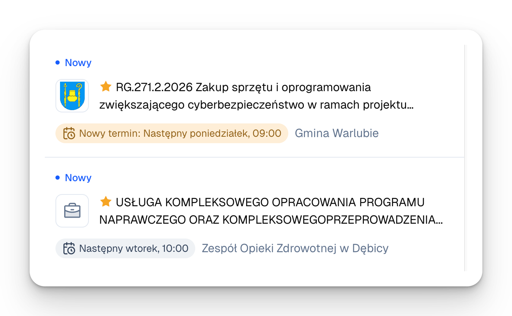
Skrzynka Mimira odzwierciedla dobrze znany interfejs mailowej skrzynki odbiorczej. Każdy przetarg pokazuje się jako oddzielna wiadomość zawierająca:
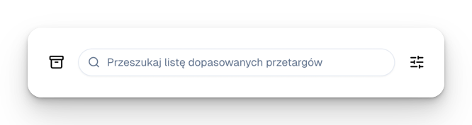
W skrzynce znajduje się też baner przypominający działania, które zawsze możesz podjąć, by otrzymywać jeszcze lepiej dopasowane przetargi — odrzucanie przetargów, które nie są dla Was interesujące, oraz aktualizacja profilu wyszukiwania.
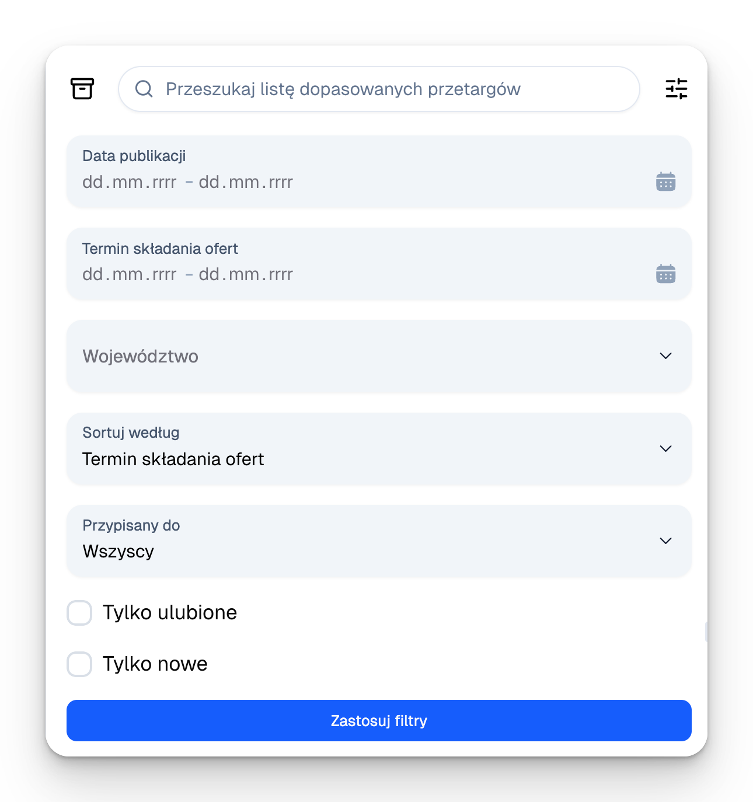
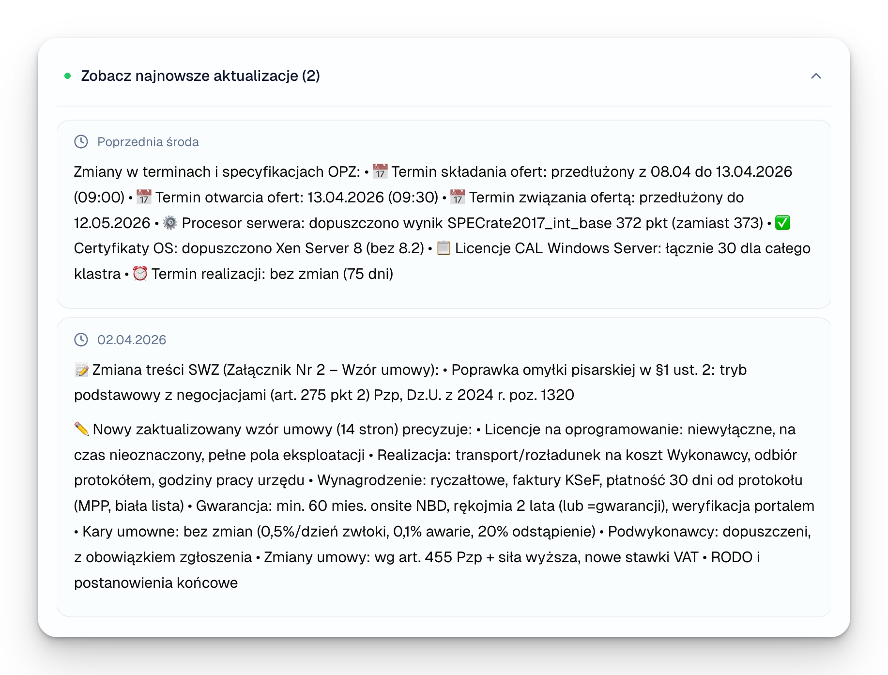
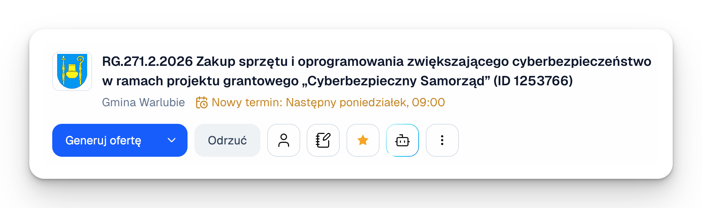
Na górze Skrzynki odbiorczej znajdziesz trzy pola:
Dostępne filtry:
Sortowanie wg:
Sortowanie w pierwszej kolejności wpływa na przetargi oznaczone gwiazdką, a dopiero potem na pozostałe. Dlatego przetarg z gwiazdką ogłoszony 5 kwietnia pojawi się przed przetargiem bez gwiazdki ogłoszonym 31 marca.
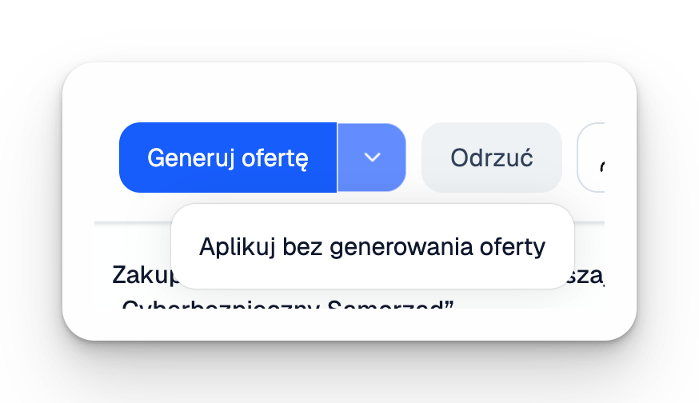
Po kliknięciu w dowolny przetarg w skrzynce odbiorczej, po prawej stronie ekranu zobaczysz jego analizę wraz z kluczowymi informacjami. Jeżeli postępowanie dzieli się na części, po kliknięciu w każdą z nich zobaczysz analizę jej poświęconą.
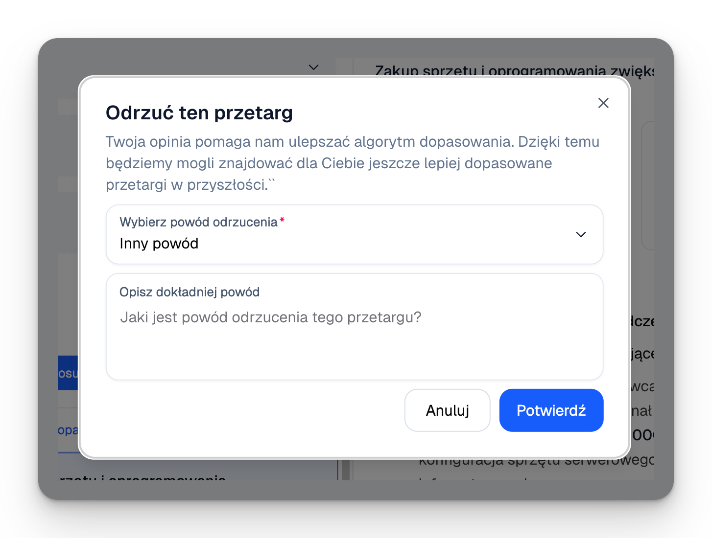
Na analizę przetargu składają się:
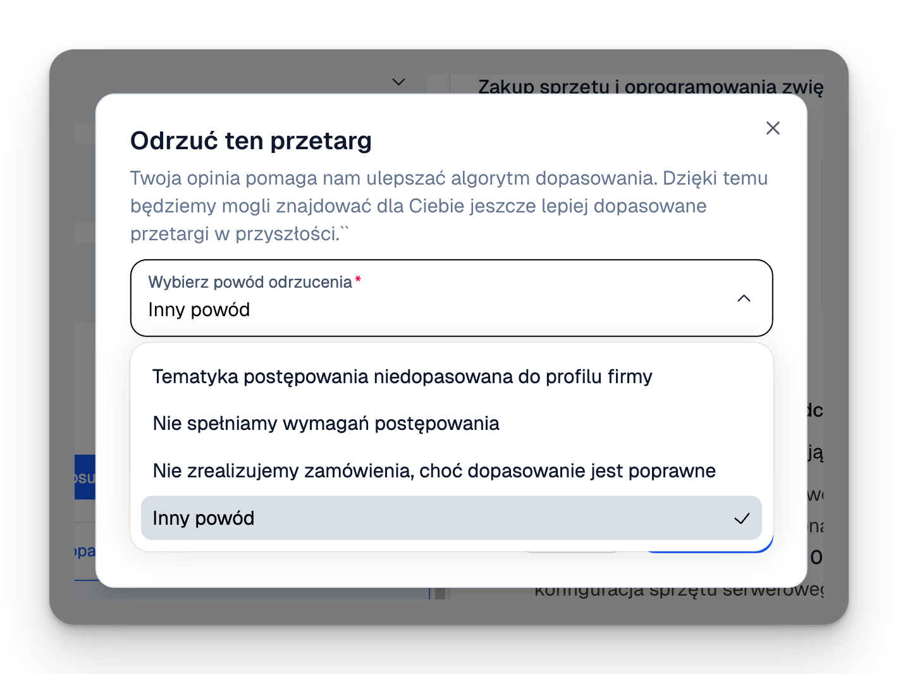
Odpowiedzi AI na pytania wybrane przez Ciebie jako kryteria analizy dla danego profilu wyszukiwania.
Co zamawiający będzie brał pod uwagę, jakie wagi przypisał poszczególnym kryteriom i co trzeba zrobić, by zdobyć maksymalną punktację (szczegóły widoczne są zawsze po kliknięciu w dane kryterium).
W kilka minut wygenerujesz przybliżoną wycenę dla danego przetargu na podstawie danych historycznych z podobnych przetargów oraz aktualnych danych rynkowych. Szczegóły w punkcie 3.4 Wyceny do ofert.
Szczegółowa analiza podzielona na rozwijane zakładki.
Najważniejsze informacje dotyczące prawno-finansowych aspektów przetargu oraz link do strony, na której opublikowano dany przetarg.
Jeżeli po zapoznaniu się z analizą przetargu masz jeszcze jakieś pytania, zawsze możesz je zadać naszemu Asystentowi AI. Uruchomisz go klikając w ikonę robota w panelu powyżej analizy.
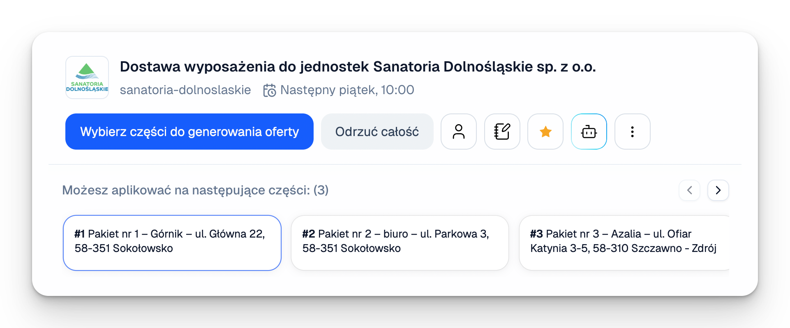
Asystent AI Mimiry to inteligentny czatbot, który ma dostęp wyłącznie do dokumentów danego przetargu. Dzięki temu jest odporny na tzw. halucynacje (nie wymyśla odpowiedzi) i zawsze podaje, z którego fragmentu dokumentu przetargowego wyciągnął informację.
Asystent może m.in.:
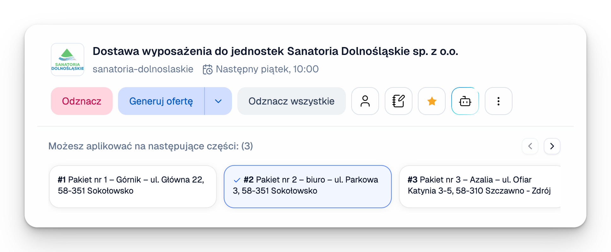
Mimira umożliwia sprawne wygenerowanie przybliżonej wyceny dla danego przetargu. Analizujemy w tym celu:
Po wejściu w raport szczegółowy zobaczysz dokładną analizę, jak Mimira doszła do każdej ceny, oraz otrzymasz bezpośrednie linki do źródeł. Każdą wycenę możesz pobrać jako plik PDF.
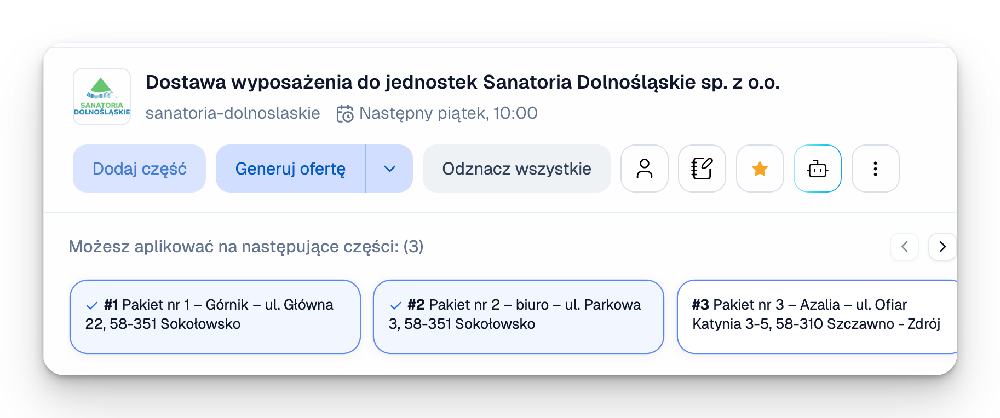
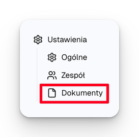
W zamówieniach publicznych zdarza się, że zamawiający zmienia treść dokumentów przetargowych z własnej inicjatywy lub na skutek pytań od firm zainteresowanych udziałem. Takie zmiany mogą istotnie wpłynąć na to, czy warto starać się o dane zamówienie — dlatego śledzimy je dla Ciebie w Mimirze.
W przypadku zmiany terminu (w większości przypadków przedłużenia), nowy termin w Mimirze jest dodatkowo oznaczony kolorem żółtym.
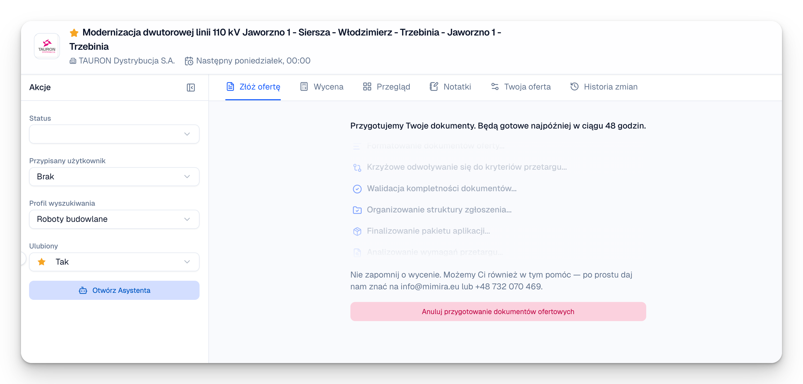
Jeśli zamawiający opublikował nowe dokumenty, na górze strony z analizą pojawia się mrugająca zielona kropka z przyciskiem „Zobacz najnowsze aktualizacje". Po jej kliknięciu zobaczysz podsumowanie zmian.
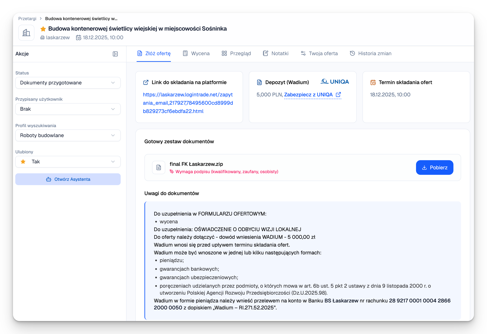
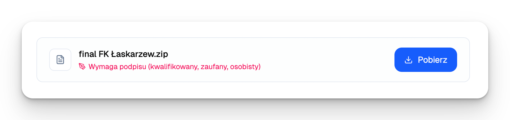
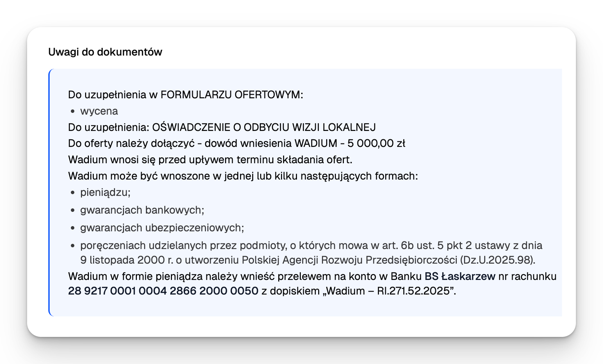
Na górze każdej strony z analizą przetargu znajdziesz pasek z kilkoma przyciskami. Oto co robi każdy z nich:
| Przycisk | Co robi |
|---|---|
| 📤 Generuj ofertę | Zleca przygotowanie dokumentów. Szczegóły → Moduł 4 |
| ↗️ Aplikuj bez generowania | Przenosi postępowanie do „Twoich przetargów" bez generowania. Dostępny po kliknięciu „ptaszka" w niebieskim przycisku „Generuj ofertę" |
| ❌ Odrzuć | Usuwa przetarg z listy i uczy algorytm, jakiego rodzaju zamówień Mimira nie powinna rekomendować |
| 👤 Przypisz osobę | Przypisuje członka zespołu jako osobę odpowiedzialną za dany przetarg. Przetargi można później filtrować per osoba |
| 🗒️ Notatki | Dodajesz własne notatki dotyczące tego przetargu |
| ⭐ Ulubione | Oznaczasz gwiazdką dla łatwiejszego wyszukiwania |
| 🤖 Asystent AI | Analizuje załączniki, cytuje źródła. Szczegóły → 3.3 |
| ⋯ Menu | Pobierz jako .docx lub „Oznacz jako nieprzeczytane" |
Szczegóły generowania ofert zostaną omówione w Module 4. Tu skupimy się na czynności nie mniej ważnej — odrzucaniu przetargów, w których z jakichś powodów nie chcecie wziąć udziału.
Im więcej przetargów odrzucisz, tym trafniejsze będą kolejne rekomendacje. To jak uczenie algorytmu: „takie nie, takie tak".
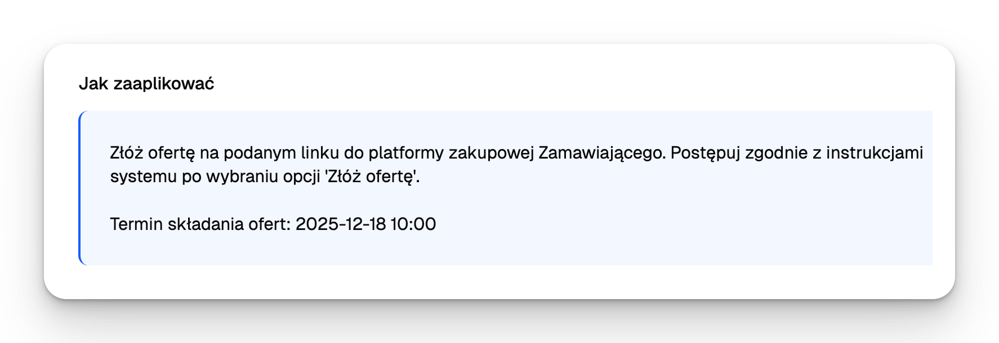
Po kliknięciu Odrzuć zapytamy Cię o powód tej decyzji. Każdy powód inaczej wpływa na algorytm:
| Powód odrzucenia | Wpływ na algorytm |
|---|---|
| Tematyka niedopasowana | Algorytm unika podobnych przetargów w przyszłości. Opisz krótko, dlaczego tego typu przetargi nie pasują do Twojej firmy. |
| Nie spełniamy wymagań | Algorytm nauczy się lepiej filtrować przetargi. Opisz krótko, które wymagania spełniasz, a których nie. |
| Nie zrealizujemy, choć dopasowanie poprawne | Nie wpływa na algorytm rekomendacji. Używasz, gdy przetarg pasuje, chcesz widzieć podobne, ale w tym nie startujesz z innych powodów. |
| Inny powód | Wpływ na algorytm zależy od opisu, który podasz. |
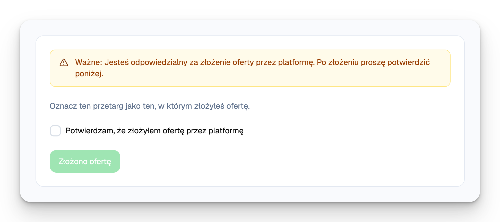